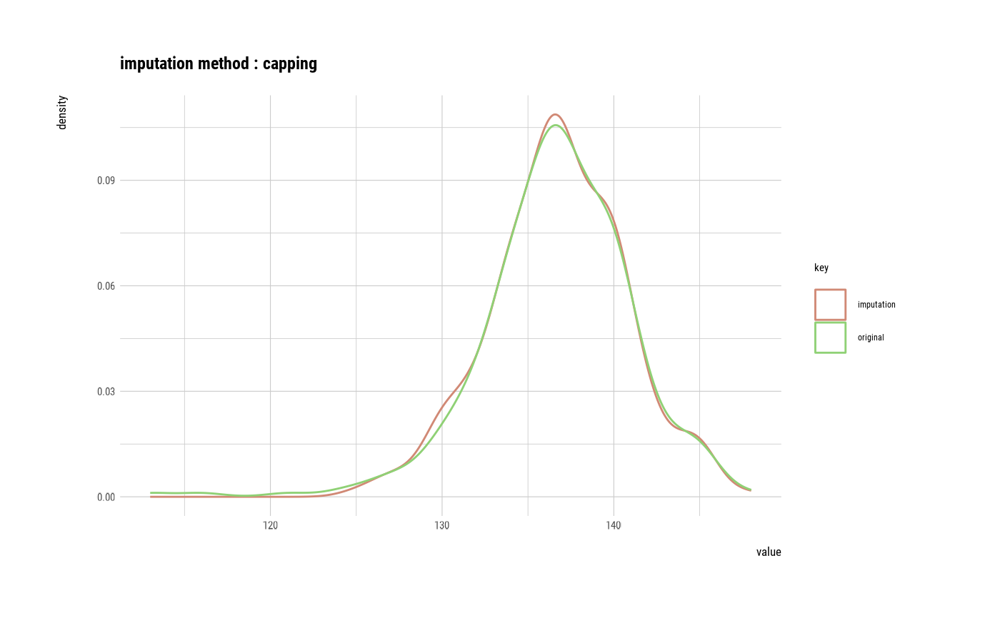

Outliers are imputed with some representative values and statistical methods.
imputate_outlier(.data, xvar, method, no_attrs)
| .data | a data.frame or a |
|---|---|
| xvar | variable name to replace missing value. |
| method | method of missing values imputation. |
| no_attrs | logical. If TRUE, return numerical variable or categorical variable. else If FALSE, imputation class. |
An object of imputation class. or numerical variable. if no_attrs is FALSE then return imputation class, else no_attrs is TRUE then return numerical vector. Attributes of imputation class is as follows.
method : method of missing value imputation.
predictor is numerical variable
"mean" : arithmetic mean
"median" : median
"mode" : mode
"capping" : Impute the upper outliers with 95 percentile, and Impute the bottom outliers with 5 percentile.
outlier_pos : position of outliers in predictor.
outliers : outliers. outliers corresponding to outlier_pos.
type : "outliers". type of imputation.
imputate_outlier() creates an imputation class. The `imputation` class includes missing value position, imputed value, and method of missing value imputation, etc. The `imputation` class compares the imputed value with the original value to help determine whether the imputed value is used in the analysis.
See vignette("transformation") for an introduction to these concepts.
# Generate data for the example carseats <- ISLR::Carseats carseats[sample(seq(NROW(carseats)), 20), "Income"] <- NA carseats[sample(seq(NROW(carseats)), 5), "Urban"] <- NA # Replace the outliers of the Price variable with median imputate_outlier(carseats, Price, method = "median")#> [1] 120 83 80 97 128 72 108 120 124 124 100 94 136 86 118 144 110 131 68 121 131 #> [22] 109 138 109 113 82 131 107 97 102 89 131 137 128 128 96 100 110 102 138 126 124 #> [43] 117 134 95 135 70 108 98 149 108 108 129 119 144 154 84 117 103 114 123 107 133 #> [64] 101 104 128 91 115 134 99 99 150 116 104 136 92 70 89 145 90 79 128 139 94 #> [85] 121 112 134 126 111 119 103 107 125 104 84 148 132 129 127 107 106 118 97 96 138 #> [106] 97 139 108 103 90 116 151 125 127 106 129 128 119 99 128 131 87 108 155 120 117 #> [127] 133 116 126 147 77 94 136 97 131 120 120 118 109 94 129 131 104 159 123 117 131 #> [148] 119 97 87 114 103 128 150 110 69 157 90 112 70 111 160 149 106 141 117 137 93 #> [169] 117 77 118 55 110 128 117 122 154 94 81 116 149 91 140 102 97 107 86 96 90 #> [190] 104 101 173 93 96 128 112 133 138 128 126 146 134 130 157 124 132 160 97 64 90 #> [211] 123 120 105 139 107 144 144 111 120 116 124 107 145 125 141 82 122 101 163 72 114 #> [232] 122 105 120 129 132 108 135 133 118 121 94 135 110 100 88 90 151 101 117 156 132 #> [253] 117 122 129 81 144 112 81 100 101 118 132 115 159 129 112 112 105 166 89 110 63 #> [274] 86 119 132 130 125 151 158 145 105 154 117 96 131 113 72 97 156 103 89 74 89 #> [295] 99 137 123 104 130 96 99 87 110 99 134 132 133 120 126 80 166 132 135 54 129 #> [316] 171 72 136 130 129 152 98 139 103 150 104 122 104 111 89 112 134 104 147 83 110 #> [337] 143 102 101 126 91 93 118 121 126 149 125 112 107 96 91 105 122 92 145 146 164 #> [358] 72 118 130 114 104 110 108 131 162 134 117 79 122 119 126 98 116 118 124 92 125 #> [379] 119 107 89 151 121 68 112 132 160 115 78 107 111 124 130 120 139 128 120 159 95 #> [400] 120 #> attr(,"method") #> [1] "median" #> attr(,"var_type") #> [1] "numerical" #> attr(,"outlier_pos") #> [1] 43 126 166 175 368 #> attr(,"outliers") #> [1] 24 49 191 185 53 #> attr(,"type") #> [1] "outliers" #> attr(,"message") #> [1] "complete imputation" #> attr(,"success") #> [1] TRUE #> attr(,"class") #> [1] "imputation" "numeric"# Replace the outliers of the Price variable with capping imputate_outlier(carseats, Price, method = "capping")#> [1] 120.00 83.00 80.00 97.00 128.00 72.00 108.00 120.00 124.00 124.00 100.00 94.00 #> [13] 136.00 86.00 118.00 144.00 110.00 131.00 68.00 121.00 131.00 109.00 138.00 109.00 #> [25] 113.00 82.00 131.00 107.00 97.00 102.00 89.00 131.00 137.00 128.00 128.00 96.00 #> [37] 100.00 110.00 102.00 138.00 126.00 124.00 77.00 134.00 95.00 135.00 70.00 108.00 #> [49] 98.00 149.00 108.00 108.00 129.00 119.00 144.00 154.00 84.00 117.00 103.00 114.00 #> [61] 123.00 107.00 133.00 101.00 104.00 128.00 91.00 115.00 134.00 99.00 99.00 150.00 #> [73] 116.00 104.00 136.00 92.00 70.00 89.00 145.00 90.00 79.00 128.00 139.00 94.00 #> [85] 121.00 112.00 134.00 126.00 111.00 119.00 103.00 107.00 125.00 104.00 84.00 148.00 #> [97] 132.00 129.00 127.00 107.00 106.00 118.00 97.00 96.00 138.00 97.00 139.00 108.00 #> [109] 103.00 90.00 116.00 151.00 125.00 127.00 106.00 129.00 128.00 119.00 99.00 128.00 #> [121] 131.00 87.00 108.00 155.00 120.00 77.00 133.00 116.00 126.00 147.00 77.00 94.00 #> [133] 136.00 97.00 131.00 120.00 120.00 118.00 109.00 94.00 129.00 131.00 104.00 159.00 #> [145] 123.00 117.00 131.00 119.00 97.00 87.00 114.00 103.00 128.00 150.00 110.00 69.00 #> [157] 157.00 90.00 112.00 70.00 111.00 160.00 149.00 106.00 141.00 155.05 137.00 93.00 #> [169] 117.00 77.00 118.00 55.00 110.00 128.00 155.05 122.00 154.00 94.00 81.00 116.00 #> [181] 149.00 91.00 140.00 102.00 97.00 107.00 86.00 96.00 90.00 104.00 101.00 173.00 #> [193] 93.00 96.00 128.00 112.00 133.00 138.00 128.00 126.00 146.00 134.00 130.00 157.00 #> [205] 124.00 132.00 160.00 97.00 64.00 90.00 123.00 120.00 105.00 139.00 107.00 144.00 #> [217] 144.00 111.00 120.00 116.00 124.00 107.00 145.00 125.00 141.00 82.00 122.00 101.00 #> [229] 163.00 72.00 114.00 122.00 105.00 120.00 129.00 132.00 108.00 135.00 133.00 118.00 #> [241] 121.00 94.00 135.00 110.00 100.00 88.00 90.00 151.00 101.00 117.00 156.00 132.00 #> [253] 117.00 122.00 129.00 81.00 144.00 112.00 81.00 100.00 101.00 118.00 132.00 115.00 #> [265] 159.00 129.00 112.00 112.00 105.00 166.00 89.00 110.00 63.00 86.00 119.00 132.00 #> [277] 130.00 125.00 151.00 158.00 145.00 105.00 154.00 117.00 96.00 131.00 113.00 72.00 #> [289] 97.00 156.00 103.00 89.00 74.00 89.00 99.00 137.00 123.00 104.00 130.00 96.00 #> [301] 99.00 87.00 110.00 99.00 134.00 132.00 133.00 120.00 126.00 80.00 166.00 132.00 #> [313] 135.00 54.00 129.00 171.00 72.00 136.00 130.00 129.00 152.00 98.00 139.00 103.00 #> [325] 150.00 104.00 122.00 104.00 111.00 89.00 112.00 134.00 104.00 147.00 83.00 110.00 #> [337] 143.00 102.00 101.00 126.00 91.00 93.00 118.00 121.00 126.00 149.00 125.00 112.00 #> [349] 107.00 96.00 91.00 105.00 122.00 92.00 145.00 146.00 164.00 72.00 118.00 130.00 #> [361] 114.00 104.00 110.00 108.00 131.00 162.00 134.00 77.00 79.00 122.00 119.00 126.00 #> [373] 98.00 116.00 118.00 124.00 92.00 125.00 119.00 107.00 89.00 151.00 121.00 68.00 #> [385] 112.00 132.00 160.00 115.00 78.00 107.00 111.00 124.00 130.00 120.00 139.00 128.00 #> [397] 120.00 159.00 95.00 120.00 #> attr(,"method") #> [1] "capping" #> attr(,"var_type") #> [1] "numerical" #> attr(,"outlier_pos") #> [1] 43 126 166 175 368 #> attr(,"outliers") #> [1] 24 49 191 185 53 #> attr(,"type") #> [1] "outliers" #> attr(,"message") #> [1] "complete imputation" #> attr(,"success") #> [1] TRUE #> attr(,"class") #> [1] "imputation" "numeric"## using dplyr ------------------------------------- library(dplyr) # The mean before and after the imputation of the Price variable carseats %>% mutate(Price_imp = imputate_outlier(carseats, Price, method = "capping", no_attrs = TRUE)) %>% group_by(US) %>% summarise(orig = mean(Price, na.rm = TRUE), imputation = mean(Price_imp, na.rm = TRUE))#>#> # A tibble: 2 x 3 #> US orig imputation #> <fct> <dbl> <dbl> #> 1 No 114. 114. #> 2 Yes 117. 117.# If the variable of interest is a numerical variable price <- imputate_outlier(carseats, Price) price#> [1] 120.00 83.00 80.00 97.00 128.00 72.00 108.00 120.00 124.00 124.00 100.00 94.00 #> [13] 136.00 86.00 118.00 144.00 110.00 131.00 68.00 121.00 131.00 109.00 138.00 109.00 #> [25] 113.00 82.00 131.00 107.00 97.00 102.00 89.00 131.00 137.00 128.00 128.00 96.00 #> [37] 100.00 110.00 102.00 138.00 126.00 124.00 77.00 134.00 95.00 135.00 70.00 108.00 #> [49] 98.00 149.00 108.00 108.00 129.00 119.00 144.00 154.00 84.00 117.00 103.00 114.00 #> [61] 123.00 107.00 133.00 101.00 104.00 128.00 91.00 115.00 134.00 99.00 99.00 150.00 #> [73] 116.00 104.00 136.00 92.00 70.00 89.00 145.00 90.00 79.00 128.00 139.00 94.00 #> [85] 121.00 112.00 134.00 126.00 111.00 119.00 103.00 107.00 125.00 104.00 84.00 148.00 #> [97] 132.00 129.00 127.00 107.00 106.00 118.00 97.00 96.00 138.00 97.00 139.00 108.00 #> [109] 103.00 90.00 116.00 151.00 125.00 127.00 106.00 129.00 128.00 119.00 99.00 128.00 #> [121] 131.00 87.00 108.00 155.00 120.00 77.00 133.00 116.00 126.00 147.00 77.00 94.00 #> [133] 136.00 97.00 131.00 120.00 120.00 118.00 109.00 94.00 129.00 131.00 104.00 159.00 #> [145] 123.00 117.00 131.00 119.00 97.00 87.00 114.00 103.00 128.00 150.00 110.00 69.00 #> [157] 157.00 90.00 112.00 70.00 111.00 160.00 149.00 106.00 141.00 155.05 137.00 93.00 #> [169] 117.00 77.00 118.00 55.00 110.00 128.00 155.05 122.00 154.00 94.00 81.00 116.00 #> [181] 149.00 91.00 140.00 102.00 97.00 107.00 86.00 96.00 90.00 104.00 101.00 173.00 #> [193] 93.00 96.00 128.00 112.00 133.00 138.00 128.00 126.00 146.00 134.00 130.00 157.00 #> [205] 124.00 132.00 160.00 97.00 64.00 90.00 123.00 120.00 105.00 139.00 107.00 144.00 #> [217] 144.00 111.00 120.00 116.00 124.00 107.00 145.00 125.00 141.00 82.00 122.00 101.00 #> [229] 163.00 72.00 114.00 122.00 105.00 120.00 129.00 132.00 108.00 135.00 133.00 118.00 #> [241] 121.00 94.00 135.00 110.00 100.00 88.00 90.00 151.00 101.00 117.00 156.00 132.00 #> [253] 117.00 122.00 129.00 81.00 144.00 112.00 81.00 100.00 101.00 118.00 132.00 115.00 #> [265] 159.00 129.00 112.00 112.00 105.00 166.00 89.00 110.00 63.00 86.00 119.00 132.00 #> [277] 130.00 125.00 151.00 158.00 145.00 105.00 154.00 117.00 96.00 131.00 113.00 72.00 #> [289] 97.00 156.00 103.00 89.00 74.00 89.00 99.00 137.00 123.00 104.00 130.00 96.00 #> [301] 99.00 87.00 110.00 99.00 134.00 132.00 133.00 120.00 126.00 80.00 166.00 132.00 #> [313] 135.00 54.00 129.00 171.00 72.00 136.00 130.00 129.00 152.00 98.00 139.00 103.00 #> [325] 150.00 104.00 122.00 104.00 111.00 89.00 112.00 134.00 104.00 147.00 83.00 110.00 #> [337] 143.00 102.00 101.00 126.00 91.00 93.00 118.00 121.00 126.00 149.00 125.00 112.00 #> [349] 107.00 96.00 91.00 105.00 122.00 92.00 145.00 146.00 164.00 72.00 118.00 130.00 #> [361] 114.00 104.00 110.00 108.00 131.00 162.00 134.00 77.00 79.00 122.00 119.00 126.00 #> [373] 98.00 116.00 118.00 124.00 92.00 125.00 119.00 107.00 89.00 151.00 121.00 68.00 #> [385] 112.00 132.00 160.00 115.00 78.00 107.00 111.00 124.00 130.00 120.00 139.00 128.00 #> [397] 120.00 159.00 95.00 120.00 #> attr(,"method") #> [1] "capping" #> attr(,"var_type") #> [1] "numerical" #> attr(,"outlier_pos") #> [1] 43 126 166 175 368 #> attr(,"outliers") #> [1] 24 49 191 185 53 #> attr(,"type") #> [1] "outliers" #> attr(,"message") #> [1] "complete imputation" #> attr(,"success") #> [1] TRUE #> attr(,"class") #> [1] "imputation" "numeric"summary(price)#> Impute outliers with capping #> #> * Information of Imputation (before vs after) #> Original Imputation #> n 400.0000000 400.0000000 #> na 0.0000000 0.0000000 #> mean 115.7950000 115.8927500 #> sd 23.6766644 22.6109187 #> se_mean 1.1838332 1.1305459 #> IQR 31.0000000 31.0000000 #> skewness -0.1252862 -0.0461621 #> kurtosis 0.4518850 -0.3030578 #> p00 24.0000000 54.0000000 #> p01 54.9900000 67.9600000 #> p05 77.0000000 77.0000000 #> p10 87.0000000 87.0000000 #> p20 96.8000000 96.8000000 #> p25 100.0000000 100.0000000 #> p30 104.0000000 104.0000000 #> p40 110.0000000 110.0000000 #> p50 117.0000000 117.0000000 #> p60 122.0000000 122.0000000 #> p70 128.3000000 128.3000000 #> p75 131.0000000 131.0000000 #> p80 134.0000000 134.0000000 #> p90 146.0000000 146.0000000 #> p95 155.0500000 155.0025000 #> p99 166.0500000 164.0200000 #> p100 191.0000000 173.0000000plot(price)